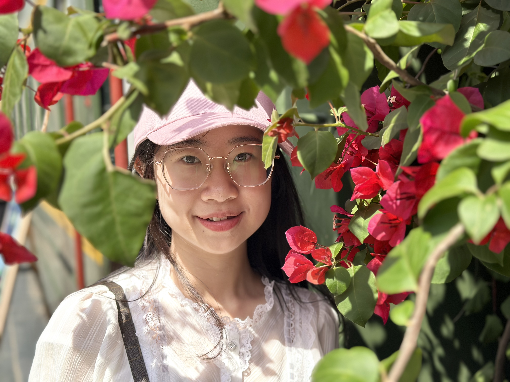

Xiaoyan Gu 古晓燕
M.Eng. Student · LLMs & Agents · Multimodal AI · Human-AI Interaction · Digital Humanities
Data Science and Engineering, Zhejiang University
State Key Laboratory of CAD&CG (ZJUVAI) · Advised by Prof. Wei Chen & Prof. Wei Zhang
I work on large language models and LLM-based agents, spanning multimodal understanding, reasoning, and other frontier directions in AI. Building on these, I am also deeply engaged in human-AI interaction and digital humanities — exploring how increasingly capable models and autonomous agents can understand, reason about, and collaborate with people in the real world.
About
I am a master's student in Data Science and Engineering at Zhejiang University (Sept. 2025 – Jul. 2028 expected), advised by Prof. Wei Chen and Prof. Wei Zhang at ZJUVAI within the State Key Laboratory of CAD&CG, where I also maintain a close and ongoing collaboration with Prof. Yifang Wang. Before joining Zhejiang University, I received my B.Eng. degree in Software Engineering from Chongqing University. My research centers on large language models and LLM-based agents, with broad interests in multimodal understanding, reasoning, and emerging frontier directions in AI — and how these advances translate into real-world, human-centered applications such as human-AI interaction and digital humanities.
I am currently an Algorithm Intern at Alibaba's Qwen Business Unit, working on multimodal content understanding with LLMs.
News
- 2026.07 Presented our paper at ChinaVis 2026 (Jul 19–22).
- 2026.06 ArtAnno conditionally accepted to UIST 2026.
- 2026.06 Started my internship at Alibaba's Qwen Business Unit.
Education
M.Eng. in Data Science and Engineering
Zhejiang University · State Key Laboratory of CAD&CG (ZJUVAI)
Advised by Prof. Wei Chen & Prof. Wei Zhang; ongoing collaboration with Prof. Yifang Wang. Research on digital humanities, HCI and multimodal LLMs.
B.Eng. in Software Engineering
Chongqing University
Worked on visualization research, advised by Prof. Haibo Hu.
Research
* Equal contribution (co-first authors) · † Co-corresponding authors
Experience
Algorithm Intern
Alibaba · Qwen Business Unit
Multimodal content understanding with LLMs.
Contact
Feel free to reach out to discuss research, collaborations and opportunities — email xiaoyanGu@zju.edu.cn.